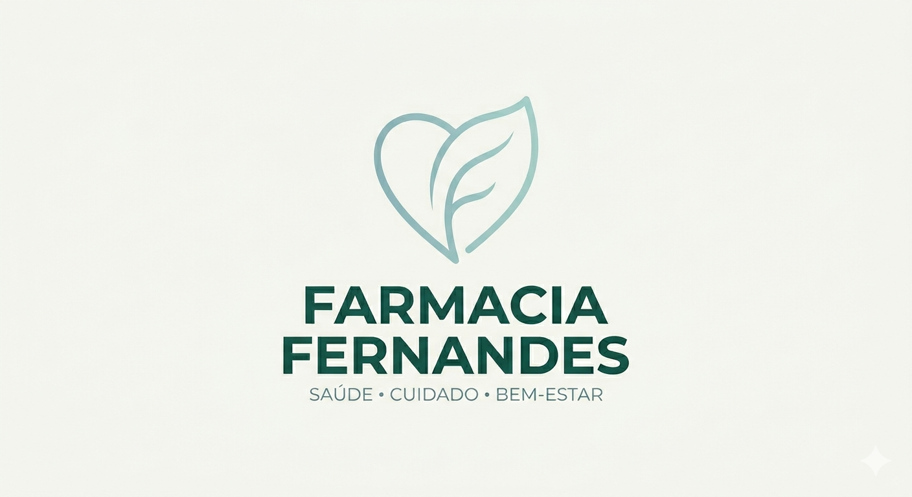

Cleber Fernandes
Estudante de Desenvolvimento Web
Estudante de Desenvolvimento Web
Estudante de programação motivado e dedicado, em busca da primeira oportunidade profissional na área de tecnologia. Com formação em curso na ETIC Algarve, demonstro forte capacidade de aprendizado rápido, perseverança na resolução de problemas e compromisso com a evolução constante. Disponível para estágio ou posição júnior, pronto para aplicar conhecimentos técnicos e contribuir para projetos inovadores.
Repositório com meus estudos, projetos práticos e evolução em desenvolvimento web.
Meus Projetos